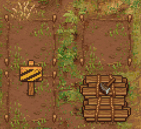

Zombie vineyard
| Zombie vineyard | |
|---|---|
 | |
Basic information
| |
Required Technology :
|
Zombie Vineyard |
Related pages :
|
Zombies, Vineyard |
Building Information
| |
Horizontal x Vertical :
|
7x6 |
Rotatable :
|
False |
Location(s)
| |
| West side of Witch Hill | |

A zombie vineyard is a place where you can have a  zombie grow your Grapes or Hops autonomously. The farms come in 3 tiers:
zombie grow your Grapes or Hops autonomously. The farms come in 3 tiers:  ,
,  and
and  , where you can only grow grapes/hops of that tier or below.
, where you can only grow grapes/hops of that tier or below.
You have to first complete a quest for the inquisitor, after which the workbench in the vineyard will appear. You can use the workbench to create the zombie vineyard, more trellises, or a trunk.
Cost
The player would need to clear any existing vine trellis' before placing the zombie vineyard.
 Vineyard Vineyard
| |||
|---|---|---|---|
| Icon | Materials Required | Energy | Notes |
 tier 1 |
5× Wooden plank 3× Simple iron parts 10× Nails |
- + - |
trellis built + station built |
tier 2 |
12× Quality fertilizer I |
N/A | Upgraded from tier 1 vineyard. |
tier 3 |
12× Quality fertilizer II |
N/A | Upgraded from tier 2 vineyard. |


Upgrading the Farm
You need to build a tier I farm first. Then you may upgrade it to tier II and afterwards to tier III. You have to use the fertilizer only once to upgrade the farm, it lasts forever.
Upgrading the farm to a higher tier has the following effects:
* The time which was arbitrarily chosen for this craft, diminished by the inefficiency of the given zombie.
Working the Farm
Take a  zombie near the farm, hit "E" to put it to work, and "E" again to remove it from the farm. Stand next to the zombie, hit "E" to select, and then select which crop should be produced or upgrade the farm.
zombie near the farm, hit "E" to put it to work, and "E" again to remove it from the farm. Stand next to the zombie, hit "E" to select, and then select which crop should be produced or upgrade the farm.
It takes a while for the crops to be produced - the higher the tier of the farm and the higher the work effiency of the zombie, the faster they work. You'll see a progress bar below the crop that's currently produced. After a while the products are stored automatically in a trunk of the vineyard. This sign  on the farm means that the trunk is full (or missing) and the work is blocked until some storage space is freed up (or constructed).
on the farm means that the trunk is full (or missing) and the work is blocked until some storage space is freed up (or constructed).
| Item Produced | Materials Required | Notes |
|---|---|---|
| 10-18× Hops 12× Hops seed |
12× Hops seed |
High quality crops need farm of appropriate tier. |
| 10-18× Grapes 12× Grape seed |
12× Grape seed |
High quality crops need farm of appropriate tier. |
Note: The number of crops produced, that are shown in this table and in the GUI of the farm, are only averages. The real numbers differ by a small random amount from those. Also the number of seeds varies around 12.